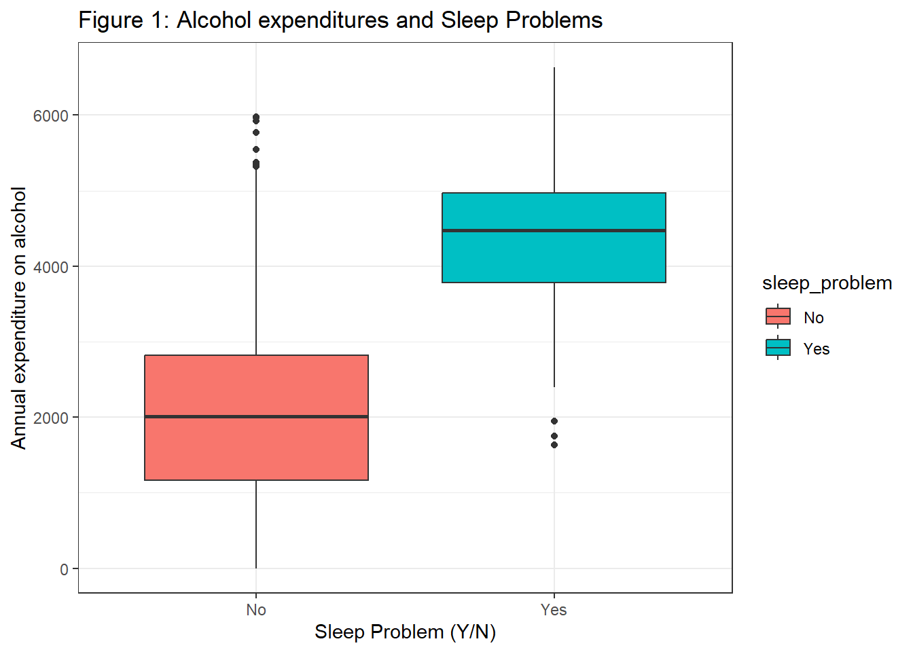
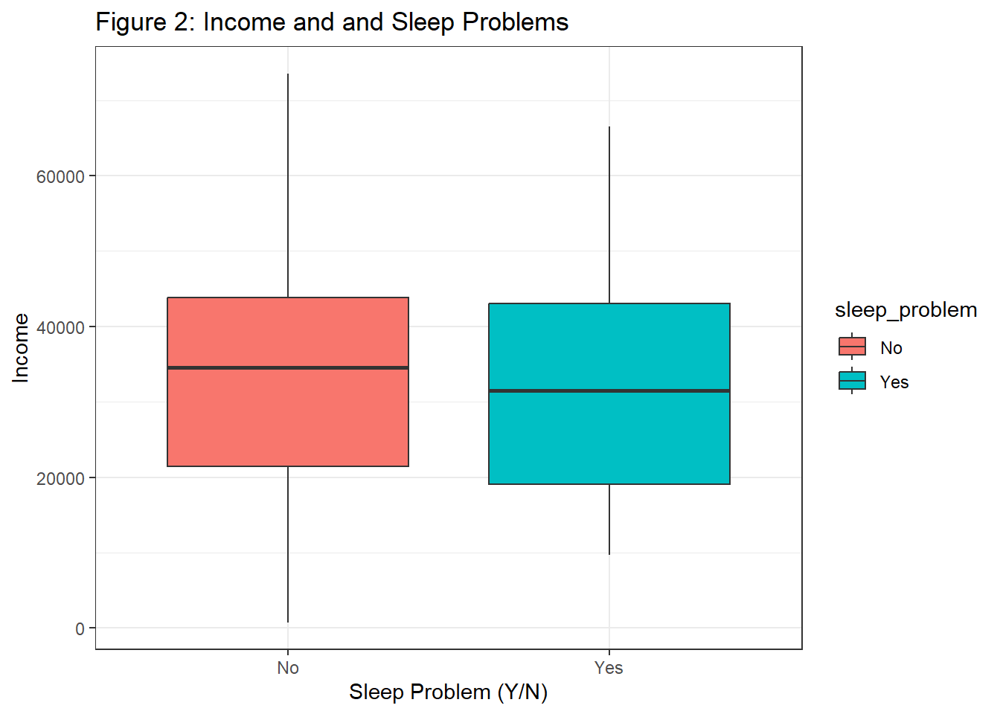
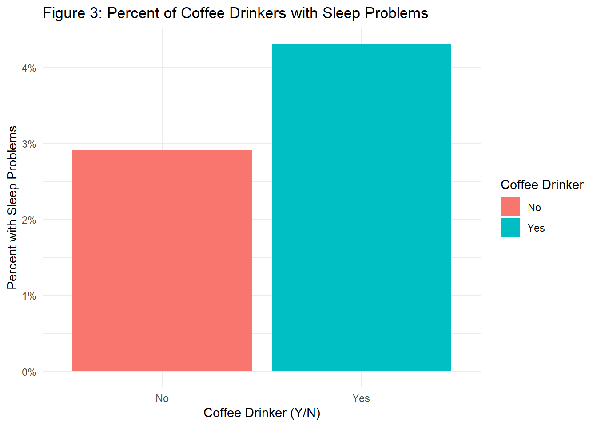
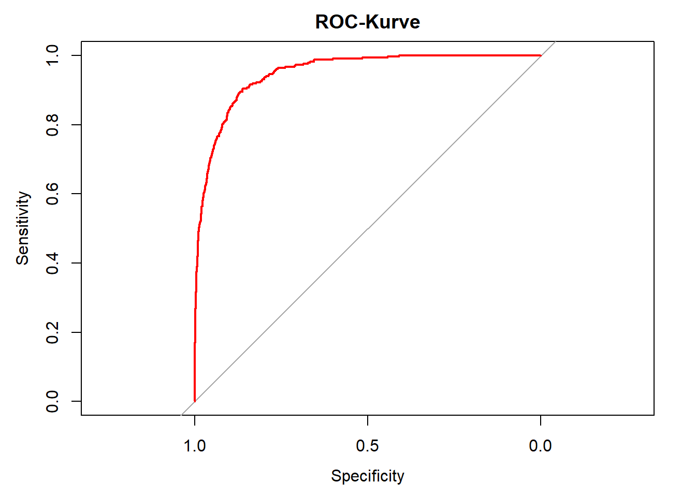

Anwendungsbeispiel
Als Mitarbeiter einer groß angelegten Schlafstudie haben Sie die Aufgabe, die Faktoren, die zu Schlafstörung führen, besser zu verstehen. Außerdem möchten Sie dieses Wissen nutzen, um bei Vorliegen einer Schlafstörung eingreifen und die Gesundheit und Lebensqualität dieser Personen verbessern zu können. Sie möchten also die Wahrscheinlichkeit vorhersagen können, dass eine Person mit (einem) bestimmten Merkmale(n) eine Schlafstörung hat.
Folgende Daten5 liegen für Ihre Analysen vor:
sleep_problem: gibt an, ob eine Person ein Schlafproblem hat (1 = ja; 0 = nein)coffee_drinker: gibt an, ob eine Person regelmäßig Kaffee trinkt (1 = ja, Kaffeetrinker; 0 = kein Kaffeetrinker)alcohol: jährlichen Ausgaben für Alkoholincome: das Jahreseinkommen
Dieser Datensatz steht im Blackboard zum Download zur Verfügung (sleep_data.csv).
Datenvorverarbeitung
rm(list = ls())
options(digits = 3)
if (!require("pacman")) install.packages("pacman")
pacman::p_load(dplyr, ggplot2, pROC, psych, readr, stats)
sleep_data <- read_csv("Daten/sleep_data.csv", show_col_types = FALSE)
# sleep_data <- sleep_data %>%
# dplyr::mutate(sleep_problem = ifelse(sleep_problem == 1, "Yes", "No"))%>%
# dplyr::mutate(coffee_drinker = ifelse(coffee_drinker == 1, "Yes", "No"))
sleep_data$sleep_problem <- factor(sleep_data$sleep_problem,
levels = c(0,1),
labels = c("No", "Yes"))
sleep_data$coffee_drinker <- factor(sleep_data$coffee_drinker,
levels = c(0,1),
labels = c("No", "Yes"))Um den Zusammenhang zwischen den einzelnen Prädiktoren und Schlafstörung besser zu verstehen, sollte man vor der Analyse die Daten deskriptiv (Tabellen, Kennwerte und Graphiken) betrachten. Wir erstellen dazu im ersten Schritt Graphiken.
Schlafprobleme und Alkohol
Offenbar haben Personen, die viel Geld für Alkohol ausgeben auch häufiger Schlafprobleme. Beachtenswert sind sowohl bei den Personen die über keine Schlafprobleme berichten, einige mit sehr hohen Ausgaben für Alkohol dabei sind, aber auch ein paar Leute wenig Geld ausgeben, aber trotzdem Schalfprobleme haben. Wie könnte man das deuten?
ggplot(data = sleep_data, aes(x = sleep_problem,
y = alcohol_spend,
fill = sleep_problem)) +
geom_boxplot() +
xlab("Sleep Problem (Y/N)") +
ylab("Annual expenditure on alcohol") +
ggtitle("Figure 1: Alcohol expenditures and Sleep Problems") +
theme_bw()
Schlafprobleme und Einkommen
Das Einkommen dürfte keinen beachtenswerten Einfluss auf die Schlafprobleme haben.
ggplot(data = sleep_data, aes(x = sleep_problem, y = income, fill = sleep_problem)) +
geom_boxplot() +
xlab("Sleep Problem (Y/N)") +
ylab("Income") +
ggtitle("Figure 2: Income and and Sleep Problems") +
theme_bw()
Schlafprobleme und Kaffe
Hier kann man einen Effekt des Kaffees feststellen. Offenbar hat ein höherer Anteil an Personen die Kaffeetrinker sind Schlafprobleme. Ob der Unterschied zwischen den beiden Gruppen statistisch bedeutsam ist, bleibt noch zu zeigen!
sleep_data %>%
dplyr::group_by(sleep_problem, coffee_drinker) %>%
dplyr::summarise(count = n()) %>%
ungroup() %>%
dplyr::group_by(coffee_drinker) %>%
dplyr::mutate(total_coffee_drinkers = sum(count)) %>%
ungroup() %>%
dplyr::mutate(proportion = count / total_coffee_drinkers) %>%
dplyr::filter(sleep_problem == "Yes") %>%
ggplot(aes(x = coffee_drinker, y = proportion, fill = coffee_drinker)) +
geom_bar(stat = "identity") +
theme_minimal() +
ylab("Percent with Sleep Problems") +
xlab("Coffee Drinker (Y/N)") +
ggtitle("Figure 3: Percent of Coffee Drinkers with Sleep Problems") +
labs(fill = "Coffee Drinker") +
scale_y_continuous(labels = scales::percent)## `summarise()` has grouped output by 'sleep_problem'. You can override using the
## `.groups` argument.
Modellanpassung
Die Anpassung eines logistischen Regressionsmodells in R ist der linearen Regression sehr ähnlich.
Statt der Funktion lm() verwenden wir die Funktion glm() für Generalized Linear Modells (verallgemeinerte lineare Modelle).
Zusätzlich zu den Formel- und Datenargumenten benötigt die glm()-Funktion das Argument family, mit der die Verteilungs- und Link-funktion definiert wird. Die Verwendung des Arguments family = binomial teilt R mit, dass eine logistische Regression anstelle eines anderen GLM-Typs durchführt werden soll.
log_reg <- glm(formula = sleep_problem ~ coffee_drinker +
alcohol_spend +
income,
data = sleep_data,
family = binomial(link = 'logit'))
summary(log_reg)##
## Call:
## glm(formula = sleep_problem ~ coffee_drinker + alcohol_spend +
## income, family = binomial(link = "logit"), data = sleep_data)
##
## Coefficients:
## Estimate Std. Error z value Pr(>|z|)
## (Intercept) -1.09e+01 4.92e-01 -22.08 <2e-16 ***
## coffee_drinkerYes -6.47e-01 2.36e-01 -2.74 0.0062 **
## alcohol_spend 2.29e-03 9.28e-05 24.74 <2e-16 ***
## income 3.03e-06 8.20e-06 0.37 0.7115
## ---
## Signif. codes: 0 '***' 0.001 '**' 0.01 '*' 0.05 '.' 0.1 ' ' 1
##
## (Dispersion parameter for binomial family taken to be 1)
##
## Null deviance: 2920.6 on 9999 degrees of freedom
## Residual deviance: 1571.5 on 9996 degrees of freedom
## AIC: 1580
##
## Number of Fisher Scoring iterations: 8Die Tabelle enthält weniger Informationen als beim linearen Modell, da die Verteilung der Abweichungsresiduen nicht so wichtig ist und es kein \(R^2\) gibt, da es für die logistische Regression nicht definiert ist.
Die Koeffizienten entsprechen der Veränderung der logarithmischen Quoten für eine Erhöhung des Prädiktors um eine Einheit. Die \(p\)-Werte werden ähnlich wie bei der linearen Regression interpretiert - im Wesentlichen zeigen kleine p-Werte an, dass wir die \(H_0\) ablehnen, also dass die abhängige Variable nicht vom Prädiktor abhängt.
Wir können also daraus schließen, dass ein Zusammenhang zwischen dem Prädiktor und der abhängigen Variablen (Schlafprobleme) besteht. Für die vorliegenden Ergebnisse bedeutet das:
Intercept: Der geschätzte Achsenabschnitt ist normalerweise nicht von Interesse
Kaffeetrinker: Kaffee trinken hat einen Koeffizienten \(b_1 = -0.65\), was bedeutet, dass Kaffeetrinken mit einer Verringerung der Wahrscheinlichkeit von Schlafproblemen verbunden ist. Konkret bedeutet dies, dass die Wahrscheinlichkeit von Schlafproblemen (im Vergleich zu Nicht-Kaffeetrinkern) um einen multiplikativen Faktor von \(e^{-0.65}\) oder \(0.52\) abnimmt, wenn alle anderen Prädiktoren unverändert bleiben.Dieser Zusammenhang scheint signifikant zu sein.
Ausgaben für Alkohol: Ein Anstieg der Ausgaben für Alkohol um eine Einheit ist mit einem Anstieg der logarithmischen Wahrscheinlichkeit, an einer Schlafstörung zu leiden, um \(0.0023\) verbunden.
Einkommen: Ein p-Wert von \(0.71\) lässt den Schluss zu, dass das Einkommen nicht signifikant mit Schlafproblemen verbunden ist.
Unser Modell sagt uns, dass Kaffeetrinken eine Verringerung der Wahrscheinlichkeit (likelihood) für Schlafstörungen bewirkt. Obige Grafik zeigt jedoch, dass der Anteil der Kaffeetrinker mit Herzkrankheiten höher war als der der Nicht-Kaffeetrinkern. Wie kann das sein?
Zusammenhang der Prädiktoren
Im vorliegenden Fall sind Kaffeetrinken und Ausgaben für Alkohol korreliert (\(r = 0.204\)). Dadurch hat es den Anschein, dass Kaffetrinken einen günstigen Effekt auf die Schlafstörung hat und der Alkohol als positiver und signifikanter Effekt die Schlafstörung maßgeblich beeinflusst (Bemerkung: das Einkommen ist ja nicht signifikant!).
Vorhersagen
Angenommen, eine bestimmte Person ist Kaffeetrinker, gibt 5.000 pro Jahr für Alkohol aus und hat ein Jahreseinkommen von 60.000 Euro. Wie hoch wäre die vorhergesagte Wahrscheinlichkeit für eine Schlafstörung auf Basis des Modells?
\[ p(X) = \frac{e^{-10.09 - 0.65 + 0.0023 \times 5000 + 0.00000303 \times 60000}}{1 + e^{-10.09 - 0.65 + 0.0023 \times 5000 + 0.00000303 \times 60000}} = 0.535 \]
Vorhersagen mit unserem logistischen Modell
Um Vorhersagen durch das Modell mit R zu berechnen, verwenden wir die predict()-Funktion. Die Option type = "response" sorgt dafür, dass R die Wahrscheinlichkeiten in der Form \(P(Y=1|X)\) ausgibt.
test_obs <- data.frame(coffee_drinker = "Yes",
alcohol_spend = 5000,
income = 60000)
predict(log_reg, type = "response", test_obs)## 1
## 0.535Von Wahrscheinlichkeiten zu Klassifikationen
Wir haben jetzt vorhergesagte Wahrscheinlichkeiten, aber wir müssen diese noch in Klassifikationen umwandeln. Mit anderen Worten: Sobald du eine vorhergesagte Wahrscheinlichkeit hast, wie entscheidest du, ob diese als „1“ (Schlafproblem) oder als „0“ (kein Schlafproblem) eingestuft werden soll?
Man könnte alle Personen mit einer vorhergesagten Wahrscheinlichkeit größer als \(P(Y=1|X) > 0.50\) als “1” einstufen, und alle mit einer Wahrscheinlichkeit kleiner als \(P(Y=1|X) \leq 0.50\) als “0”.
Als Entscheidungs-Schwellenwert (engl. prediction threshold) würde man also den Wert 0,50 bestimmen. Allerdings ist es nicht immer so einfach, wie im nachfolgenden Beispiel gezeigt wird.
Modellevaluierung
Genauigkeit (Accuracy)
Die Genauigkeit (Accuracy) des Modells ist definiert als die Gesamtanzahl der korrekt vorhergesagten Fälle, geteilt durch die Gesamtanzahl der Beobachtungen. Betrachten wir zunächst die Genauigkeit des Modells für verschiedene Werte des Entscheidungsschwellenwerts:
pred_probs <- predict(log_reg, type = "response")
head(round(pred_probs, 3), n = 10) # Print first 10 probabilities## 1 2 3 4 5 6 7 8 9 10
## 0.001 0.001 0.010 0.000 0.002 0.002 0.002 0.001 0.016 0.000 thresh_1 <- 0.01
thresh_2 <- 0.25
thresh_3 <- 0.50
thresh_4 <- 1.00
accuracy_1 <- sum(ifelse(pred_probs > thresh_1,
"Yes",
"No") == sleep_data$sleep_problem) / nrow(sleep_data)
accuracy_2 <- sum(ifelse(pred_probs > thresh_2,
"Yes",
"No") == sleep_data$sleep_problem) / nrow(sleep_data)
accuracy_3 <- sum(ifelse(pred_probs > thresh_3,
"Yes",
"No") == sleep_data$sleep_problem) / nrow(sleep_data)
accuracy_4 <- sum(ifelse(pred_probs > thresh_4,
"Yes",
"No") == sleep_data$sleep_problem) / nrow(sleep_data)Allgemein ist man bestrebt, eine möglichst hohe Genauigkeit des Modells zu erreichen. In vorliegenden Fall beträgt die Accuracy bei 0.01 = 0.748, bei 0.25 = 0.966, usw.
Betrachten wir nun den vierten Schwellenwert 1. Das bedeutet, dass wir nur dann vorhersagen würden, dass eine Person eine Schlafstörung hat, wenn die vom Modell vorhergesagte Wahrscheinlichkeit für diese Person größer als 1.00 ist. Das ist aber unmöglich!
Mit anderen Worten: Wir würden niemals vorhersagen, dass jemand eine Schlafstörung hat. Dennoch beträgt unsere Genauigkeit immer noch 96.67%.
Das wäre sicher kein gutes Klassifikationsmodell!
Da unser Datensatz unausgewogen ist (nur ein kleiner Prozentsatz der Personen hat eine Schlafstörung - etwa 3,3%), können wir eine hohe Genauigkeit erzielen, indem wir einfach nie vorhersagen, dass jemand eine Schlafstörung hat. Deshalb ist die Genauigkeit in diesem Fall kein ausreichendes Kriterium, um unser Klassifikationsmodell zu beurteilen.
Sensitivität, Spezifität und die Konfusionsmatrix
Die Konfusionsmatrix unterteilt das Klassifikationsmodell in True Positives (\(TP\), wahre Positive), True Negatives (\(TN\), wahre Negative), False Positives (\(FP\), falsch Positive) und False Negatives (\(FN\), falsch Negative).
Die Sensitivität eines Klassifikationsmodells ist definiert als der Anteil der wahren Positiven.
\[\text{Sensitivität} = \frac{TP}{TP + FN}\]
Sensitivität misst also, wie gut ein Modell positive Fälle tatsächlich erkennt.
Die Spezifität eines Klassifikationsmodells ist definiert als der Anteil der wahren Negativen.
\[\text{Spezitivität} = \frac{TN}{FP + TN}\]
Die Spezifität misst also, wie gut ein Modell negative Fälle korrekt identifiziert.
Betrachten wir die Konfusionsmatrix für zwei Entscheidungsschwellenwerte, nämlich 0.01 und 0.25 und vergleichen anschließend die Ergebnisse:
data.frame( actual = sleep_data$sleep_problem,
predicted = ifelse(pred_probs > thresh_1, 1, 0)) %>% table()## predicted
## actual 0 1
## No 7163 2504
## Yes 12 321 #> predicted
#> actual 0 1
#> 0 7163 2504
#> 1 12 321
#++++++++++++++++++++++++++++++++
# Sensitivität
Sensitivität1 <- round((321 / (321 + 12))*100, 2)
#> [1] 0.963964
#++++++++++++++++++++++++++++++++
# Spezifität
round((7163 / (7163 + 2504))*100, 2)## [1] 74.1 #> [1] 0.7409744
#++++++++++++++++++++++++++++++++
# --- 0.25 Threshold ---
data.frame(actual = sleep_data$sleep_problem,
predicted = ifelse(pred_probs > thresh_2, 1, 0)) %>% table()## predicted
## actual 0 1
## No 9477 190
## Yes 149 184 #> predicted
#> actual 0 1
#> 0 9477 190
#> 1 149 184
#++++++++++++++++++++++++++++++++
# Sensitivität
round((184 / (184 + 149))*100, 2)## [1] 55.3## [1] 98Wir halten fest:
Ein Schwellenwert (Threshold) von 0.01 identifiziert nahezu alle tatsächlichen Fälle mit Schlafproblemen korrekt (Sensitivität = \(Sensitivität1\)%). Allerdings wird auch häufig vorhergesagt, dass jemand ein Schlafproblem hat, obwohl dies nicht der Fall ist (hohe Anzahl an falsch-positiven Ergebnissen).
Ein Schwellenwert von 0.25 übersieht hingegen oft Personen mit tatsächlicher Schlafproblemen, sagt aber im Gegenzug selten fälschlicherweise Schlafproblemen bei gesunden Personen voraus.
Zusammenfassung
Welcher Schwellenwert ist also besser?
Wenn das Ziel darin besteht, möglichst viele Personen mit tatsächlicher Schlafproblem zu identifizieren, um zum Beispiel frühzeitig eingreifen und den Lebensstil oder die Gesundheit beeinflussen zu können, könnte ein Schwellenwert von 0.01 sinnvoll sein. So werden mehr betroffene Personen erkannt. Allerdings geht dies mit dem Nachteil einher, dass sehr viele Menschen unnötig gewarnt werden und dadurch Stress entsteht oder zusätzliche Kosten für die Versicherung anfallen, weil Personen getestet werden, die eigentlich gesund sind.
Was ist der größere Fehler?
Ist es schlimmer, Menschen zu sagen, sie könnten eine Schlafproblem haben, und sie sollten unbedingt weitere, langwierige und kostspielige Untersuchungen machen lassen, obwohl sie gar kein Problem haben? Oder ist es schlimmer, betroffene Personen nicht zu erkennen, sodass diese nicht getestet und behandelt werden? Wenn das Verpassen von Betroffenen der größere Fehler ist, sollte man einen niedrigeren Schwellenwert wie 0,01 wählen, um bei der Identifikation besonders vorsichtig zu sein.
ROC & AUC
Man kann die Vorhersagekraft eines Klassifikationsmodells auch visualisieren und quantifizieren, ohne vorher einen bestimmten Schwellenwert festzulegen. Wenn man die Sensitivität gegen die Falsch-Positiv-Rate (False Positive Rate) des Modells über beliebig viele Schwellenwerte hinweg aufträgt, erhält man die Receiver-Operating-Characteristic-Kurve, kurz ROC-Kurve. Die Fläche unter dieser Kurve, auch AUC (Area Under the Curve) genannt, ist eine weit verbreitete Kennzahl zum Vergleich von Klassifikationsmodellen.
# library(pROC)
true_labels <- sleep_data$sleep_problem
# ROC-Kurve
roc_obj <- roc(true_labels, pred_probs)## Setting levels: control = No, case = Yes## Setting direction: controls < cases
## Area under the curve: 0.95Für eine ausführliche Beschreibung der ROC und AUC siehe Klassifizierung: ROC und AUC
bei den vorliegenden Daten handelt es sich um simulierte Daten!↩︎